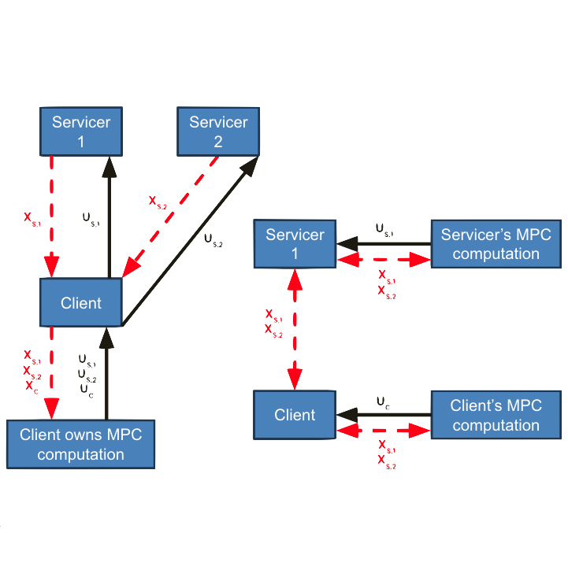
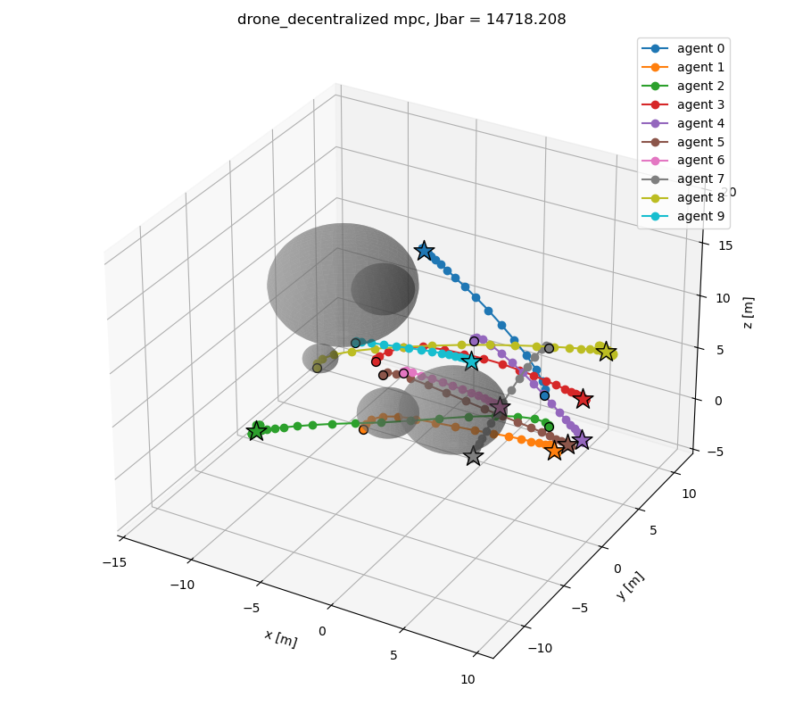
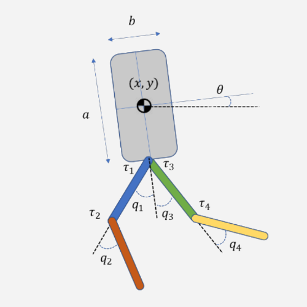
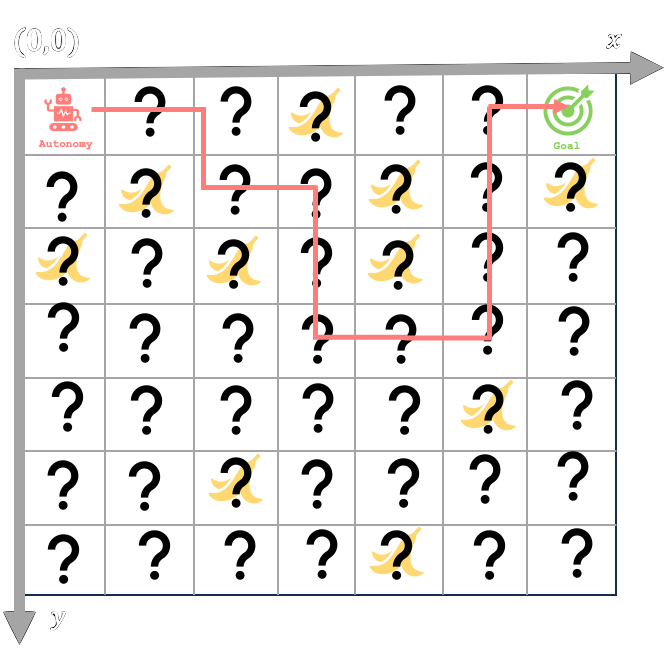
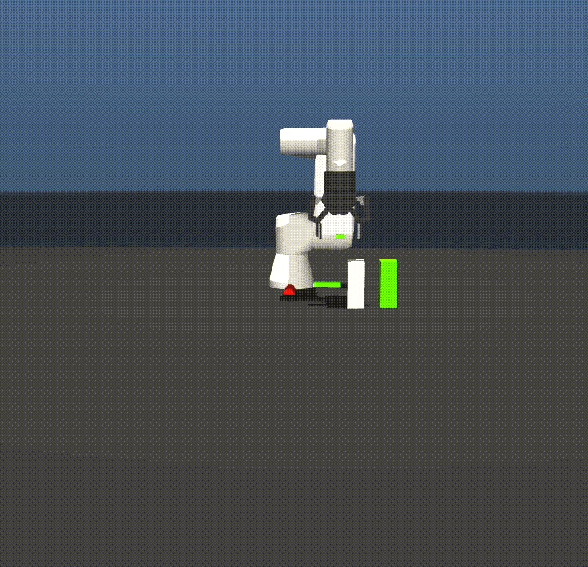
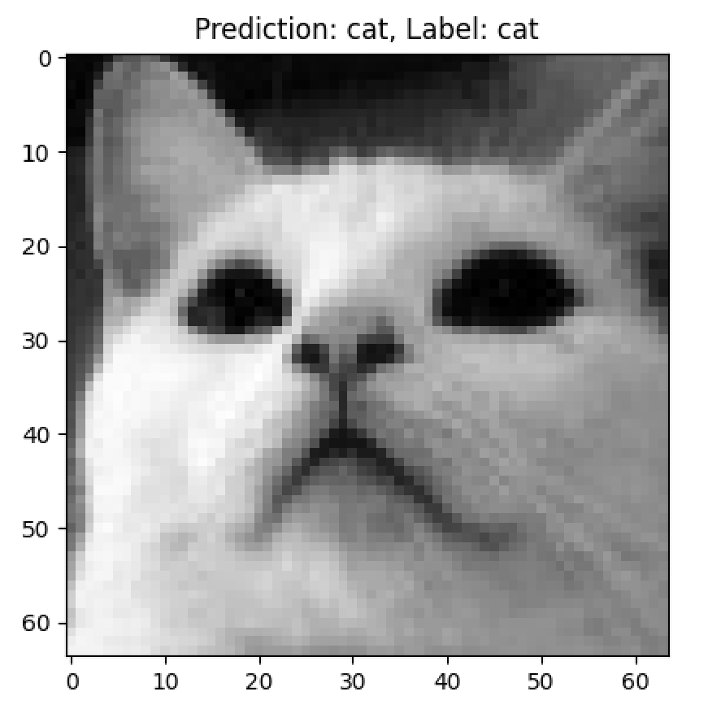
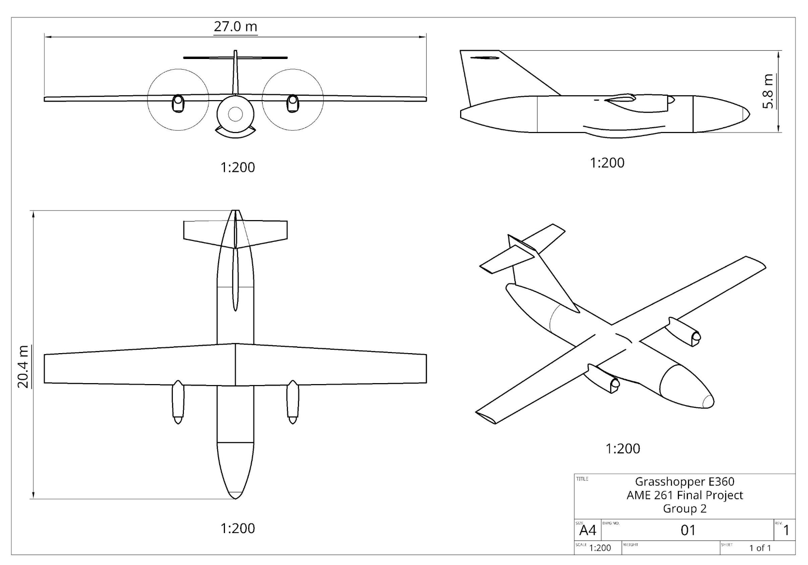
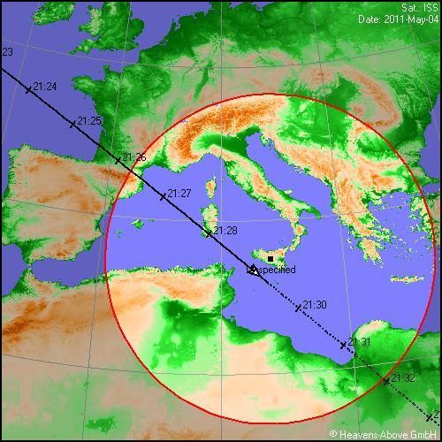

Derek Chibuzor
I am a M.S. student in Mechanical Engineering at the University of Southern California (USC) and a member of the Dynamic Robotics and Control Laboratory (DRCL) (led by professor Quan Nguyen).
I previously interned at Lawrence Livermore National Laboratory (LLNL), Northrop Grumman, and Amazon/Information Sciences Institute.

News
- (June 2025) Started computational engineering internship at LLNL in Livermore, CA.
- (May 2025) Graduated Cum Laude with a B.S. in Aerospace Engineering from USC.
- (April 2025) Awarded the Frederick Angus Gross Endowed Scholarship.
- (June 2024) Started 2nd mechanical engineering internship at Northrop Grumman in Roy, UT.
- (June 2024) Started mechanical engineering internship at Northrop Grumman in Roy, UT.
- (Feb 2024) Featured in Amazon Science for my work on CLINGERS with Amazon SURE.
- (January 2023) Selected for the Amazon SURE RISE mentorship program.
- (June 2022) Started robotics software research with Amazon SURE in Marina Del Rey, CA.
Projects
My interests are in robotics, dynamics, control, optimal control, GNC, flight mechanics, trajectory optimization, system identification, deep learning, reinforcement learning, and hardware integration.

Diffusion Modelling for Oracle-Guided Multi-mode Policies
Dynamic Robotics and Control Laboratory (2025)
Generative modeling via diffusion transformers for the Unitree G1.

Distributed MPC for co-ordinated RPO between multiple spacecrafts
ASTE 599 - Extreme Environment Robotic Autonomy (2025)
Comparative analysis of distributed and decentralized Model Predictive Control (DMPC), bang-bang control, and reinforcement learning for co-ordinated rendezvous and proximity operations (RPO).

Distributed and Decentralized Model Predictive Control
Personal Project (2025)
Distributed and Decentralized Model Predictive Control (DMPC) implementations for multi-agent systems using CasADi.

Bipedal Robot Control Suite
AME 556 - Robot Dynamics and Control (2025)
Extended Kalman filter (EKF) and various controllers (e.g., LQR, MPC, I/O linearization) for 10-DOF bipedal robot.


6-DoF Idealized Drone Simulator
AME 556 - Robot Dynamics and Control (2025)
Implementation of simulation and animation software for an idealized 6-DoF drone.

Cartpole LQR
Personal Project (2025)
Linear Quadratic Regulator (LQR) for an inverted pendulum on a cart (cartpole).

UR3e Simulation Suite
Lawrence Livermore National Laboratory (2025-)
MuJoCo simulation suite for autonomous manipulation of laboratory hardware with the UR3e and 2F-85.

End-to-end System Identification (E2eSysID)
Dynamic Robotics and Control Laboratory (2025)
Task-agnostic framework for end-to-end system identification using gradient and sample-based optimization.

Dual-Axis Solar Array Articulation
AME 441aL - Senior Projects Laboratory (2024)
Design, develop, and test a 3U CubeSat-compatible sun-seeking solar array articulation module to increase solar power generation efficiency

Euler-Bernoulli Beam Theory Spring-Mass-Damper Model
AME 341bL - Mechoptronics Laboratory II (2024)
Evaluation of Euler-Bernoulli Beam Theory in the 2nd Order Spring-Mass-Damper (SMD) Model of a Spring-Attached Cantilever Beam

Neural Network Library
Personal Project (2024-)
Extensible implementations of various neural network architectures from scratch.

Automatic Terrain Collision Avoidance System (Auto-TCAS)
Personal Project (2024)
Inspired by Lockheed Martin's Automatic Ground Collision Avoidance System (Auto-GCAS), Auto-TCAS performs stall recovery maneuvers via PID control.

Predictive Maintenance Classification with AI4I 2020 Dataset
AME 404 - Computational Solutions to Engineering Problems (2024)
Multi-class classification of machine failure types. The dataset consists of 10,000 samples representing various operational states of industrial machinery, with features describing temperature, speed, torque, and tool wear.

Digital Image Correlation (DIC)
AME 341bL - Mechoptronics Laboratory II (2024)
Implementation of Digital Image Correlation (DIC) algorithm to compute fault line displacements and locations using the Zero-mean Normalized Cross-Correlation (ZNCC) method.

Hybrid-Electric Aircraft Design Proposal
AME 261 - Basic Flight Mechanics (2023)
Hybrid turboprop aircraft with improved fuel efficiency, reduced emissions, and extended range capability.

accessReport
ASTE 280 - Foundations of Astronautical Engineering (2023)
Calculates ISS elevation and azimuth over a user-specified period of time at a user-specified latitude and longitude.

Publications
- Rajguru, A., Eyre, E., Ebrahimi, M., Barnhart, D., Adam, R., Griffith, T., Chibuzor, D., Haq, S., Nguyen, J., and Le, J., “CLINGERS: Optimizing RPO Ease for Assembly Operations”, AAS/AIAA Astrodynamics Specialist Conference, Aug 7-11, 2022, AAS 22-580.